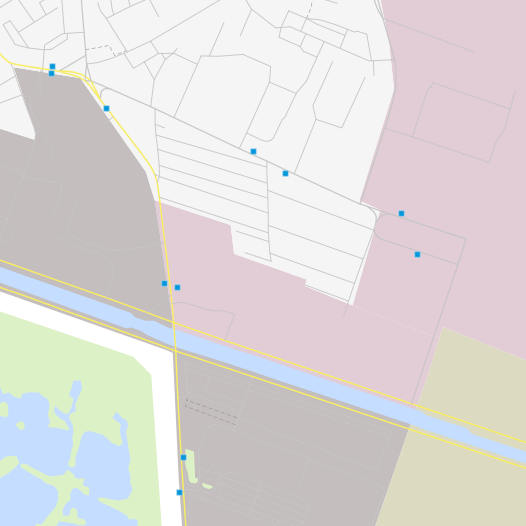
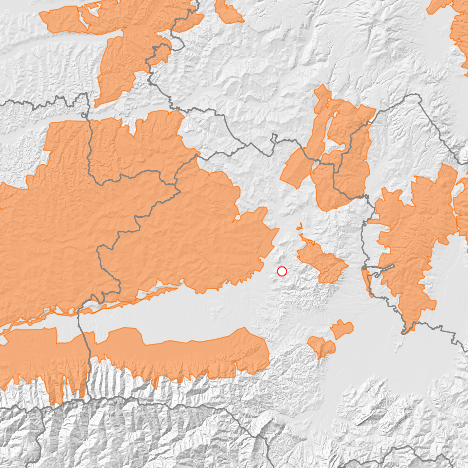

Layer Order
The order in which the layers are drawn on the map is important because layers might hide other layers if the order is ot optimal. The function that re-orders layers in a cartographicaly optimal sequence helps avoiding unwanted and unfavorable overlaps. This function is based on basic assumptions, two general rules, and a set of exception rules.
Basic Assumptions
- We are concerned with the order in which the layers are drawn onto the map, not their visual importance in the map.
- We search to prevent features from one layer to hide or obstruct features from another layer (inter and not intra layers conflicts).
General Rules
- Raster layers are drawn first on the "map canvas", then polygon layers, then line layers and finally point layers (rule based on geometry types).
- Layers with the same geometry type stay in the order they have been added by the user.


Exception Rules
Exceptions to the two general rules are based on the semantic content of the layers.
Theme-based
- a water polygon layer goes above any other polygon layer, except if the second layer's theme is water, building, administrative or thematic
- an administrative polygon layer goes above any other polygon layer, except if the second layer's theme is administrative or building
- a building polygon layer goes above any other polygon layers, except another building polygon layer
- a water natural polygon layer (here in gray) goes above a water natural line layer (centerlines of lakes issue)
- an administrative polygon layer goes above a water line layer (border above rivers)
- a transport line layer goes above a water line layer or an administrative line layer
- a transport line layer goes above a water line layer
Category-based
- a thematic polygon layer goes above a cultural or natural polygon layer, except if theme is admin (stay above) or landuse/landcover (stay below)
- a thematic line layer goes above a cultural or natural line layer
- a cultural line layer goes above a cultural line layer